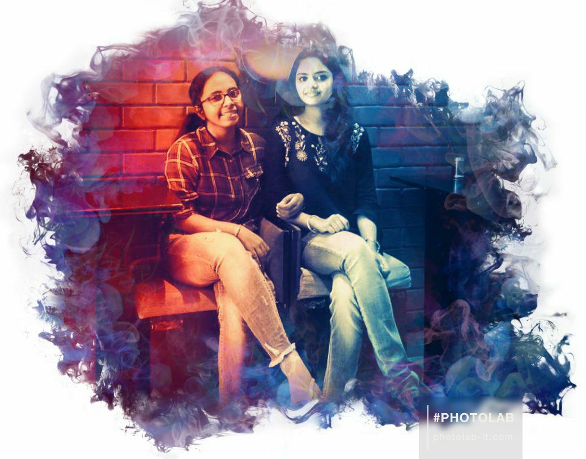

A picture is worth with a thousand words,
but the memories are priceless! ♥
Hey mami,
Hope u are well and doing good . Ik this page will not be enough to write our whole story . But it's okay , lemme summarize . We first met on July 18,2016 . It was a good start . First day itself we sat next to each other . GOSH! we have same name , had same cutoff , spectacles etc etc . It's enough to have good wavelength right . I remember u , shivapriya and me sitting on same desk . But ena nu therila sudden ha u went to front bench and sat next to suvaegha . Within few days unfortunately , bench shift aachu and I had no other go but to sit with vinetha and hema . Though they treated well , there were some language barriers among us . I felt alone for many days . Break and lunch time la unga kuda time spend panni , apdiyae pochu . Even we haven't travelled out that much in first year . Hardly once(that skywalk,forum meet) dha nenaikran . Am so happy that you came for my birthday adhum surprise ha . We went to forum but we spent less time IK . I made a fault there , I left u alone and I felt a lot for that!.
ThankGod we sat together in second year. We shared a lot of things. Probably we had some good outings too. IK I had many mood swings at that time. Was down for long days. But u were there for me and letting me to cry on your shoulders. You advised a lot but I didn't listen(haha) which I usually do 😂. Enamo that was a hard phase, I isolated myself, I bit opened to you only and you know that and thank you for tolerating. Apdiyae third year also vantom. IK its hard for u to balence all the friends on a same scale, but u did it well. But enaku oru vishayam un kitta epomae uruthum. Suren issue dha. UK how much hard feelings I had. Una thavira yar kittayum avolo sonadhu ila(almost everything). Suren just tried to make my days better. My NIIT days fun ha irundhadhuku avanum one of the reasons . If I were in ur place, If I came to know that u were hurt and u got a person to make u feel better, I swear I would have felt happy only. Aana ne adhuku suren kitta sanda potta. Adhum just for one post! Nithya va vidu, avaluku na ena gothrough panan nu theriyadhu. But you... Adhum unga kuda before ae avan post potrukan . Adhum andha vishayam ne kuda en kitta solala, suren solli dha I got to know, matha ela hurtings vida, adhu dha romba hurt panuchu. I cried for that in the middle of the road. Unuku suren apdi panala nu sonna, Are you serious dude? Are you hurted the same way as I were?! Are u thrown out by someone at that time?!. Enamo things happened, IK nithya unuku romba important at that time. Don't say no, inoru person kuda ne close ha irukradhu enaku enikum hurt aagadhu(mark this). Ne enaku that importance kudutha podhum nu dha na irupan. There were days ne avanga kuda outing ponadhu also maracha, somewhere in stories I got to know that. Seriously ipo kuda ne yar kuda veliya ponalum enaku hurt aagadhu, but hiding does.
Ne kuda irundhum , kuda iladha days mari aachu enaku. Seriously, I like you a lot adhan hurt aachu and till now these things my mind la iruku and forever irukum. Oru chinna vishayam, your andhaman tour I guess, beach la name eludhi pic eduthu suren ku anupcha and I saw that also in story too. Enaku apo ena apdi panni anupra alavuku na important ila nu dha thoonuchu. Y suren or nithya ku panna nu thoonala!. Ne outings pogum mothu ena also kuptrukalam (as I had no gangs to go with at that time) nu dha thoonuchu, Y ne pona nu thoonala!. Ipdi many small things I had, but I didn't expressed. But trust me, I liked you among all.
Suren ula epdi nu therila, but veliya he made me feel so better. IK he too played at some places but avan kuda knjm free ha irundhan. That's y I gave him so much importance. Even avanukum ungala romba pidikum,even ena vida ungala romba pidikum, but that post issue la lam avanum romba hurt aanan. He was not even normal for many days. IK that. Third year la namma vera desk pora situation also came. You were so sad at that time. Always bench la paduthutae irupa, but u haven't shared ur problems with me. But I know its for suren. Whatsapp also vitta ne. Enaku adhula involve aaga also pidikala, so vitan. Trust me, if its any other reason, I would have not left you. It was very hard days for our friendship nu soluvan. Nanum una nariya hurt panirukan ik but ena panna, afterall we all are humans. But third year end la irundhu, things started to change.
After ivolo misunderstandings apro also we are close friends, which shows our bond is more strong. SIH sanda la namma romba down aanom. Apo lam I felt that only you were there for me in our class. We were left alone, but we didn't lose hope. Last varikum try panom. We are great warriors actually. Enaku oru help or edhachu thevai na I can blindly trust you. Andha place la ne iruka. IK that year bday la ne ena happy pananum nu romba efforts edutha, But matha friends yarum show panala. But still am so happy that you guys made orphanage plan. Ne vandhadhu enaku romba relief. Neyum arvind yum close ha irukradhu kuda enaku romba pidichuruku. It will be so fun even in future. These CMRIT fights la lam again namma down aanom. Friends mela hopes ae pochu namaku. I felt like , avanga ena group la avolo blame panum mothu ne enaku nu stand panala nu . Like avanga ena blame panum mothu na thitran kathran nu , ne once kuda ava epo apdi sonna or like edhumae pesala nu. But later I realized, una yarachu apdi blame panna kuda , you won't show off . That's ur character of being cool and sensitive. That's actually cool and it avoids lot of stresses. But one thing na soliyae aanum, if you were not there with me at that time, I would have been even more down. MY ela places la yum ne irundha to which am very greatful. Bangalore la we both had very good experience. Bus journey, late night snacks, CMRIT foods, sight seeing malls etc etc. Enaku una matum ila, ur parents also romba pidikum. Una mari pathupanga enaiyum. Placement times la knjm busy aanom namma. Am so happy for your GRE and IELTS score. So happy that you got top universities. Le Royal Meridian day was very close to my heart nu soluvan. Enakaga fussili reasons ku lam surprise ha kutitu pona. I had tasty pasta. Unoda kutty kutty gifts and letters lam refreshing ha irukum. Its very hard for me to list all ur surprises. Cuz list romba perusu pah!. Ne enaku matum ila, arvind ku also surprises paniruka, which is more great.
Namma tour experience namaku ino oru memorable moments thandhuchu. Aniku night train la na aludha apo also ne dha kuda irundha. But start apdi irundhlum, you made it better. I love that bag which you gifted me. Wonderla la ino super ha enjoy panom. My fear for rides lam un kuda irundhu dha break panan, by holding hands. Water rides was the best part. Ending matum enamo knjm sodhapals. Ilana tour ino best airukum. Andha wonderla night ku dinner namma saptadhae different. Shawarma first time taste panan. Dhai puri saptom, Chicken olinju olinju saptom. We both are good crime partners ♥. Symposium la also namma combo work aachu. Namma nenacha mari panom and apovum we were alone. But luckily, u got my back. And that anna university was top spl pa. MUGEN RAO ha nerla pathan and enakaga pavum avolo neram nenga irundhinga. Enamo those hard feelings which I had on u on first 5 semesters elam pochu.
Ne my torchors elam tolerate panuva. Na periods pain la irukum mothu main ha comfort panuva. Enaku legs lam also pudichu vitruka many times. Unlimited surprises thandhuruka enaku. Unlimited gifts, which I don't know how I'll pay u back. You have inspired me a lot. Ena oru sister, parent range ku pathupa. You cared for my happiness. My vetla also una romba pidikum and they trust you a lot. Ne panna range ku padhi kuda na panadhu ila IK, but trust me, I like u a lot and unuku kandipa life long support ha irupan. Atleast by that I can repay you. Enaku matha frnds close aavangala nu lam theriyadhu but keep one thing in mind, NO ONE , I repeat NO ONE can replace you in my life. You are such a gem! ♥ and I mean it. Even this lockdown bday apo ne enaku edutha efforts very great. Andha video pathalae theriyum nariya peru adhu solirupanga. Even my frnds like u, they became close to u. Enaku ne nariya letters or images apdi lam anupum mothu y na apdi react panan na, really like na ena feel panan nu sonan. I don't wanna fake nu feel aachu. I have seen you writing letters from first year. I don't need a sophisticated sentence to show what you feel. Even this whole page ha na fulla english la yae paniruka mudiyum. But adhu natural ha irundhurukum ha nu keta, its a question mark. I made it simple for u to understand my feelings, not to show off my english skills . After u going to IELTS class, ne oru letter or ur drive la oru poem aachu ipdi tamil la eludhuniya nu paru. IK you are very good at english, but dude, it doesn't expresses our feelings well.
Enaku still now adhu your english practice notes mari dha feel aachu adhan direct ha solitan. Sorry to hurt u, but I can't be fake with u. That tom and jerry kadhai ne text la sonadhae nalla irundhuchu enaku. It's not that I can't understand the language, but it didn't gave me that touch feel. Even some poem la,some complicated words apo dha first time na pathan ae!. But leaving all these things, I like the efforts which you took for me. And namma before mari pesuradhu ila texts la ipo, IK you are busy with ur works and either me too! But I don't feel for it, cuz IK that won't create any break bt us. Thankyou is just a small word mami, ne panadhuku na repay panna. But u have a spl place forever in my heart. This page una happy panum ha or sad panum ha nu kuda idk, but trust me, I'll be true to person whom I trust the most and will express my complete feelings only to those persons. Adhan un kitta elamae solran. Stay the same forever and I love u a lot ♥
Feeling so light now. On this friendhip day, I just ask you for one thing. "Keep in touch" forever. Wherever you go, whatever position you are in, 'remember me' and thats all I want from you. Stay blessed and IK your career will be great!. Hope you loved this page! and our four years journey splashed I guess. Take care, Stay safe, vetla elarum ketadha sollu. Before winding up, take a quick look at this.
Click the link below for a little surprise!
Loosekal Jakiradhai
With love,
Your paecu.